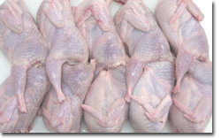

Диетические и целебные свойства мяса и яиц перепелов

Перепелиное мясо и яйца относятся к ценнейшим диетическим продуктам. Об их пользе и уникальных свойствах человечеству известно с древних времён, они применяются в восточной народной медицине при лечении некоторых болезней на протяжении столетий.
Свойства перепелиного мяса
Нежное, сочное и ароматное мясо перепела обладает
замечательным вкусом, относится к деликатесам, в обиходе называется "царской едой". Имеет высокую калорийность, превосходит крольчатину и курятину по питательным, вкусовым и диетическим качествам.
Перепелиное мясо
используется в питании при лечении болезней сердца, желудка, печени, лёгких, почек, исцеляет хронические болезни, улучшает тонус, укрепляет кости.
В меню престижных ресторанов разных стран входят блюда из перепелиного мяса. С древних времён на Руси употребляли мясо диких перепелов, которых добывали путём охоты на полях и лугах. Немало превосходных рецептов блюд из перепелов можно найти в старинных русских книгах по кулинарии.
Популярностью пользуются перепела жареные, фаршированные, маринованные, табака, с виноградными листьями, брусникой, на молоке. Вкусны перепела в супах с грибами, домашней лапшой, в составе салатов с варёным картофелем и сметаной.
Свойства перепелиных яиц
Яйцо перепёлки заслуженно считается диетическим продуктом исключительной ценности. Превосходит куриное яйцо по многим питательным веществам, содержит больше холина, белка, незаменимых аминокислот, железа, калия, меди, фосфора. Перепелиные яйца всегда находились среди еды на столах российских императоров и знатных господ.
Содержащаяся в яйце
олеиновая кислота растворяет и выводит камни их желчного пузыря, печени, почек, используется в лечении бесплодия, экзем, эпилепсии, аллергических заболеваний. Яйца содействуют улучшению самочувствия во время беременности, насыщению организма микроэлементами, аминокислотами и витаминами в послеродовой период, способствуют увеличению количества молока у кормящей матери.
Перепелиное яйцо можно употреблять в любом виде, оно широко применяется в
кулинарии. Из яиц готовят много разных блюд и коктейлей, имеющих неповторимый вкус и аромат.
В
диетическом питании яйцо используется при лечении сильных головных болей, анемии, чувствительности к ОРЗ, пониженного и повышенного давления, туберкулёзной интоксикации, снижении иммунитета, бронхиальной астме, хронической пневмонии, гастрита, заболеваний желудочно-кишечного тракта.
Насыщенность яйца витаминами группы "В" содействует улучшению работы
нервной системы, вследствие чего человек обретает уравновешенность и спокойствие. Перепелиное яйцо
не содержит холестерин, способствует повышению гемоглобина, нормализации кровяного давления, очищению крови, хорошему восстановлению организма после перенесённого инфаркта, операции. Хорошие результаты были показаны при употреблении в пищу яиц в лечении панкреатита, язвенной болезни желудка и гастрита.
Была доказана польза перепелиных яиц исследователями разных стран при
выведении радионуклидов из организма. Сначала была рекомендация от японских врачей, занимающихся поиском продуктов для лечения людей, получивших облучение в результате атомной бомбардировки Нагасаки и Хиросимы. Затем российские и белорусские врачи подтвердили эффективность яиц, которых давали в пищу больным детям, пострадавшим в результате аварии на Чернобыльской АЭС.
Высокое содержание фосфора способствует
развитию умственных способностей. Установлено что ребёнок, съедающий по 2 яйца в день, мало болеет, хорошо развивается, имеет острое зрение, крепкую нервную систему и отличную память. Японская медицина давно и всесторонне изучает свойства перепелиных яиц, они включены в обязательный рацион питания учащихся - каждый школьник получает во время обеда по 2 штуки.
Перепелиные яйца относятся к самым сильным
стимуляторам потенции. Мужчины в Германии съедают натощак 4 яйца в сыром виде, запивая водкой (одна столовая ложка), настоянной на перегородке грецкого ореха. В Болгарии специалистами разработан специальный коктейль: смешиваются 2 перепелиных яйца, 20 г коньяка, 120 г колы, чайная ложка сахара, кусочек лимона, затем в полученную смесь прибавляется газированная вода. Не менее заметен эффект усиления потенции, если просто съедать сырые яйца. Согласно исследованиям, употребление сырых яиц не несёт угрозы здоровью, они не заражаются сальмонеллезом и другими инфекционными заболеваниями, не вызывают аллергию, при этом организм усваивает все витамины на 100%.
Народная медицина советует
укрепить организм и восстановить иммунный баланс путём ежедневного употребления 6 сырых яиц (3 утром и 3 вечером) в течение 40 дней. При высокой температуре можно выпить эффективную смесь, которая готовится смешиванием 5 сырых яиц, 100 мл водки и одной столовой ложки сахара.
Перепелиные яйца способствуют
наращиванию мышечной массы, их рекомендуют включать в рацион питания людей, занимающихся спортом, в частности культуризмом и тяжёлой атлетикой.
Целебными свойствами обладает и
яичная скорлупа, приготовляемая по определённым рецептам. В медицинских центрах скорлупа используется при успешном лечении диатезов и нейродермитов.
Содержание в яйцах уникального набора аминокислот, макро и микроэлементов, лецитина содействует формированию пигмента, который придаёт лицу здоровый цвет кожи. Поэтому они широко используются в
косметологии и косметической промышленности. Во многих составах дорогостоящих шампуней и кремов самых известных в мире парфюмерных фирм содержатся компоненты перепелиных яиц. Существует немало эффективных косметических рецептов для самостоятельного приготовления масок для кожи, волос, профилактики прыщей.
К числу ценных свойств яиц перепёлок относится возможность их длительного хранения, при комнатной температуре они могут сохраняться до 1 месяца, в холодильнике - до 2 месяцев.